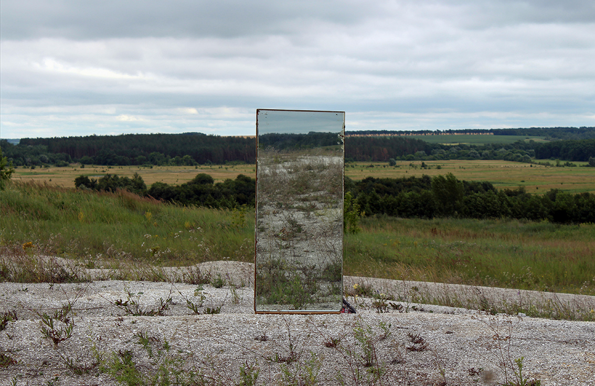
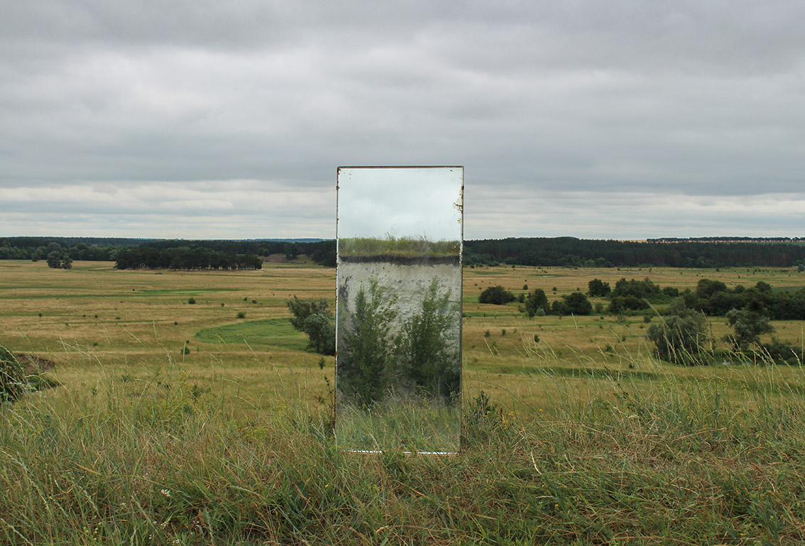

SUBSTITUTION
2018 · Land Art Symposium “Borderline Space” · Moghrytsia, Symy regiom, Ukraine · Symposium theme: “Horizon Formula” and Soviart Gallery, Kyiv, 2018

Concept
The horizon functions as a line of orientation, a promise of distance and continuity. By inserting a mirror into the landscape, the work interrupts this stable formula. Reflection replaces perspective, returning the gaze back into the terrain and toward the viewer. The mirror neither opens a new space nor extends the horizon. Instead, it exposes the landscape as fragmented and unstable, where perception depends on position and movement. The border here is not geographical, but perceptual. It exists between image and reality, presence and reflection, inside and outside. In this borderline space, the horizon ceases to be a destination and becomes a mechanism.
 